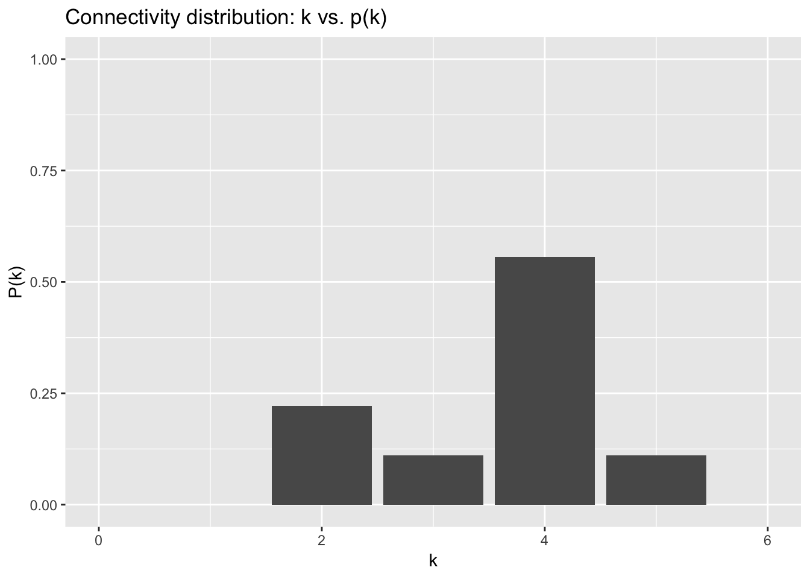
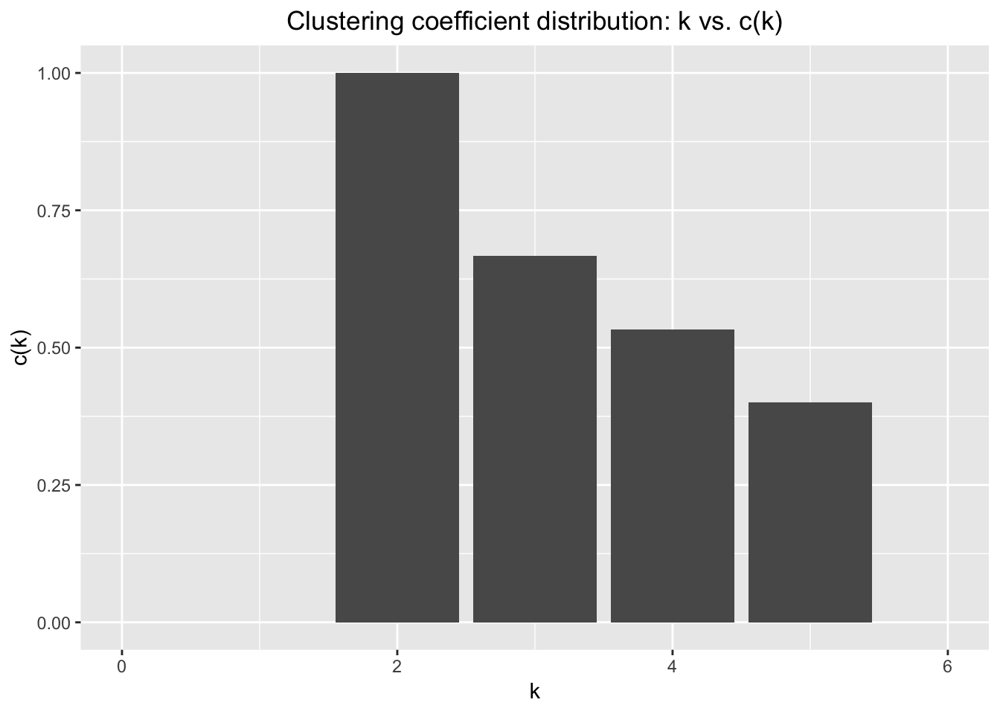
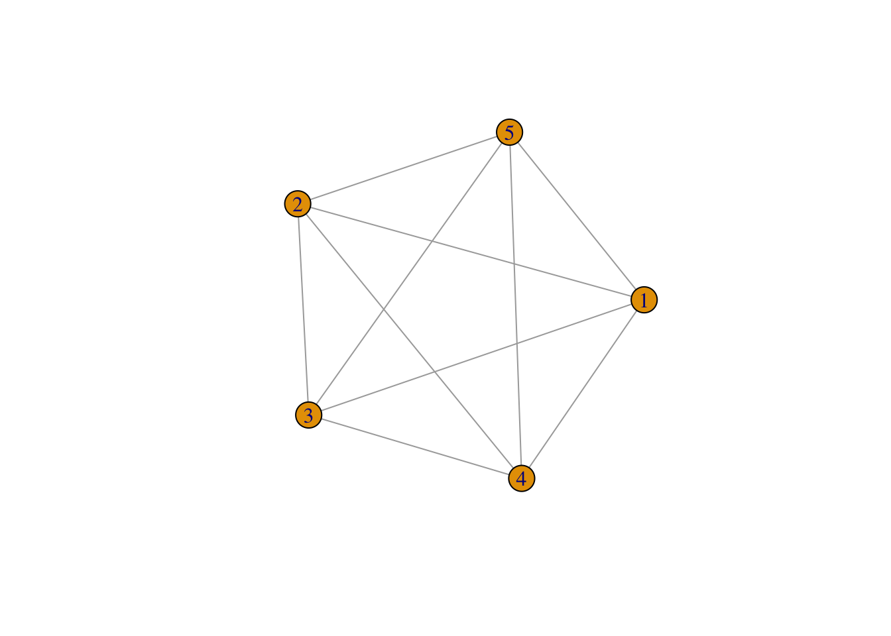
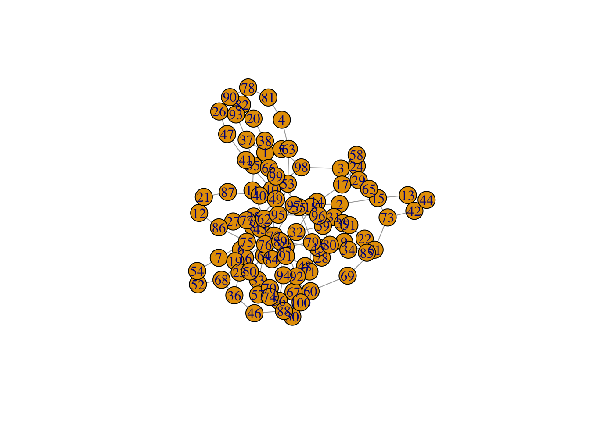
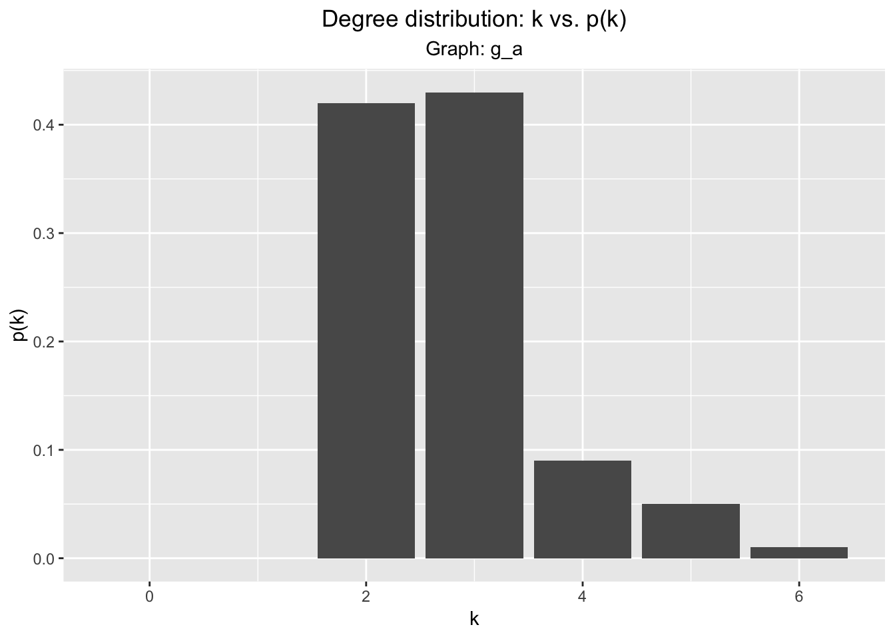
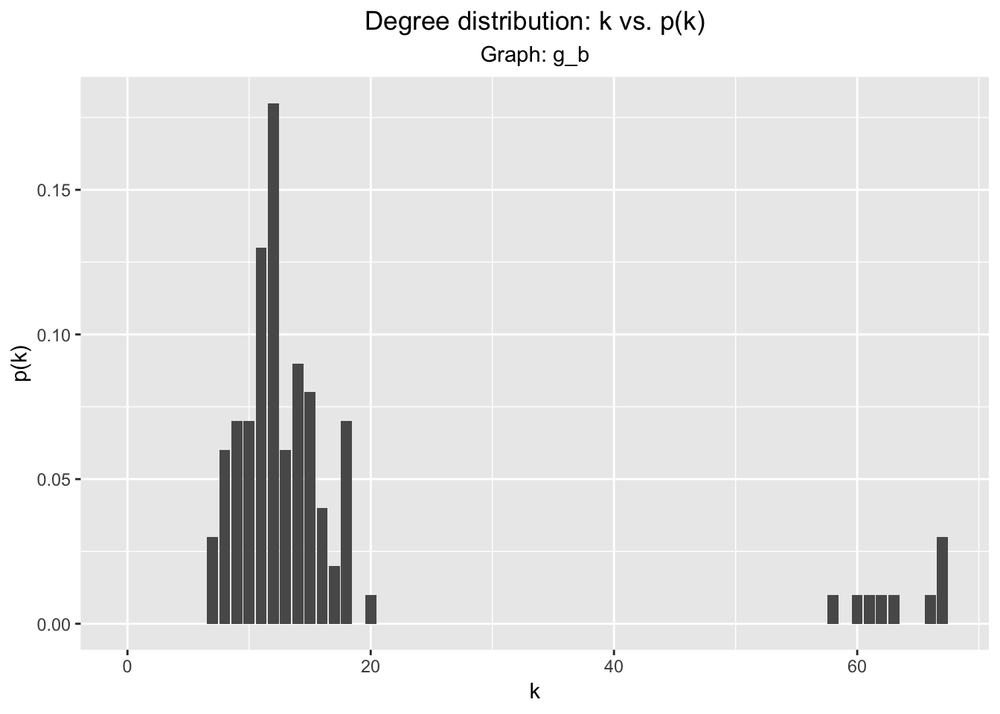
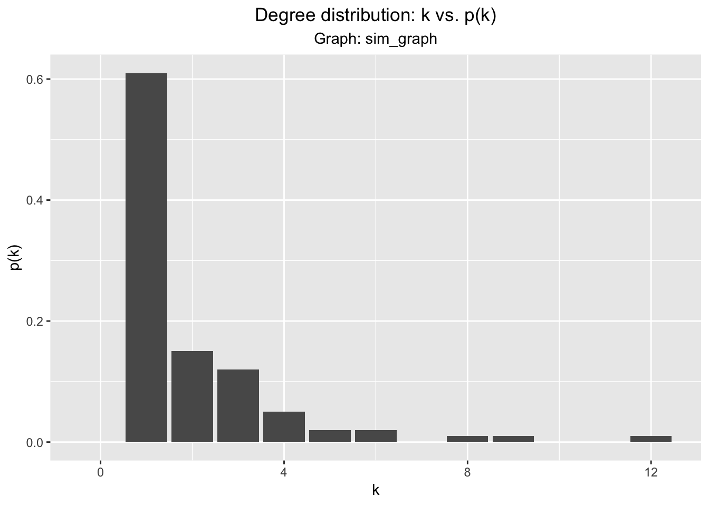

knitr::opts_chunk$set(echo = TRUE, cache = TRUE, message = FALSE)
library(igraph, warn.conflicts = FALSE)## Warning: package 'igraph' was built under R version 3.5.2library(ggplot2, warn.conflicts = FALSE)
library(tidyverse, warn.conflicts = FALSE)## Warning: package 'tibble' was built under R version 3.5.2## Warning: package 'purrr' was built under R version 3.5.2## Warning: package 'dplyr' was built under R version 3.5.2## Warning: package 'stringr' was built under R version 3.5.2## Warning: package 'forcats' was built under R version 3.5.2set.seed(489)Since we have to enter the information manually, we have to do some data wrangling before plotting the degree distribution (alternatively, we could have just written a text file with an adjaceny matrix or edge list, but oh well):
v <- c("r", "s", "t", "u", "v", "w", "x", "y", "z")
k_v <- as.numeric(c(4, 2, 3, 2, 4, 4, 4, 4, 5))
graph_info_df <- data.frame(v, k_v)
graph_info_df %>%
group_by(k_v) %>%
summarise(n = n()) %>%
mutate(freq = n / sum(n)) %>%
ggplot(aes(x = k_v, y = freq)) + geom_bar(stat = "identity") +
xlim(c(0, 6)) + ylim(c(0, 1)) +
labs(x = "k", y = "P(k)", title = "Connectivity distribution: k vs. p(k)") 
We first enter the clustering coefficients for each of the vertices of the graph and append it to graph_info_df:
c_v <- as.numeric(c(1/2, 1, 2/3, 1, 1/2, 1/2, 1/2, 2/3, 2/5))
graph_info_df <- data.frame(graph_info_df, c_v)
head(graph_info_df)## v k_v c_v
## 1 r 4 0.5000000
## 2 s 2 1.0000000
## 3 t 3 0.6666667
## 4 u 2 1.0000000
## 5 v 4 0.5000000
## 6 w 4 0.5000000We then calculate the average values of C(k) for each k:
graph_info_df %>%
group_by(k_v) %>%
summarise_at("c_v", mean) %>%
ggplot(aes(x = k_v, y = c_v)) + geom_bar(stat = "identity") +
labs(x = "k", y = "c(k)", title = "Clustering coefficient distribution: k vs. c(k)") +
theme(plot.title = element_text(hjust = 0.5)) +
xlim(c(0, 6))
| Vertex w | Vertex s | |
|---|---|---|
| Lexicographic | \(w, u, v, y, x, r, s, t, z\) | \(s, r, t, z, v, u, w, x, y\) |
| Reverse lexicographic | \(w, y, z, x, r, t, s, v, u\) | \(s, t, z, y, x, w, v, u, r\) |
| Vertex w | Vertex s | |
|---|---|---|
| Lexicographic | \(w, u, v, x, y, z, r, t, s\) | \(s, r, t, x, z, w, y, v, u\) |
| Reverse lexicographic | \(w, y, x, v, u, z, r, t, s\) | \(s, t, r, z, x, y, v, w, u\) |
We can make a fully connected graph of with five vertices with igraph::make_full_graph.
plot(make_full_graph(5))
We first read in graphA.txt and visualize it:
g_a <- read_graph("./data/hw2/graphA.txt", directed = FALSE)
plot(g_a)
diameter(g_a)## [1] 10radius(g_a)## [1] 6The average clustering coefficient \(C_a(g)\) of graph \(g\) is calculated by first calculating the clustering coefficient of each vertex in a graph, then taking the mean of all of these values. In other words,
\[ C_a(g) = \frac{1}{|V|}\sum_{v \in V} C(v)\]
where \(C(v)\) is the local clustering coefficient of a vertex \(v\). We can calculate this via igraph’s transitivity function with the type argument set to average:
transitivity(g_a, type = "average")## [1] 0.006Because the clustering coefficient ranges from 0 to 1, an average clustering coefficient of \(0.006\) indicates that, in general, the nodes of g_a are not well connected.
On the other hand, the global clustering coefficient \(C_g(g)\) of a graph \(g\) is based on triples of nodes in a graph. We call a group of three nodes an open triple if they are connected by only two edges, and we call the three nodes a closed triple if they are connected by three edges. Then, the global clustering coefficient is the ratio of the number of closed triples to number of closed and open triples. In other words,
\[ C_g(g) = \frac{\text{number of closed triples}}{\text{number of closed triples + number of open triples}}\]
The value of the \(C_g\) takes on values between 0 and 1, with higher values indicating that the graph is more densely connected and lower values indicating the opposite. We can calculate this via igraph’s transitivity function with the type argument set to global:
transitivity(g_a, type = "global")## [1] 0.01052632This again indicates that g_a is not well-connected and agrees with the average clustering coefficient. It does have a higher value than the average clustering coefficient; this is due to the fact that \(C_g\) only considers nodes that are sufficiently connected and thus places more weight on the more tightly connected nodes.
Just for completeness, we’ll visualize the degree distribution of g_a. We first make a helper function:
plot_dd <- function(g){
g.dd <- data.frame(0:(length(degree_distribution(g)) - 1),
degree_distribution(g, cumulative = FALSE))
colnames(g.dd) <-c("k", "p_k")
ggplot(g.dd, aes(x = k, y = p_k)) + geom_bar(stat = "identity") +
labs(x = "k", y = "p(k)", title = "Degree distribution: k vs. p(k)",
subtitle = paste("Graph:", deparse(substitute(g)))) +
theme(plot.title = element_text(hjust = 0.5), plot.subtitle = element_text(hjust = 0.5))
}plot_dd(g_a)
The mean_distance function will give us this value:
mean_distance(g_a, directed = FALSE)## [1] 5.061616The centrality of a node is a measure of its importance to a graph. There are different ways to measure centrality. One common measure of centrality is degree centrality, which counts the number of connections a node has. There is only one measure of degree centrality for an undirected graph as the edges have no notion of direction. However, in a directed graph, we have an in-degree centrality and an out-degree centrality. High measures of degree centrality indicate that the node interacts with many other nodes, implying that the node is somehow important to the structure of the graph.
For g_a, the node with the highest degree centrality has degree 6:
max(centr_degree(g_a)$res)## [1] 6And that node is node 72:
which(centr_degree(g_a)$res == max(centr_degree(g_a)$res))## [1] 72Another measure of centrality is betweenness centrality, which measures the number of shortest paths the node appears on. This captures the notion that although the node may not be directly acting on a bunch of nodes, it is still a node that is involved in processes. For example, in finding driving directions, this might be a bridge: it is likely not connected to a lot of streets, but it must be traversed in order to cross a river.
For g_a, the node with the highest betweenness centrality has betweenness 1307.051:
max(centr_betw(g_a, directed = FALSE)$res)## [1] 1307.051And that node is again 72:
which(centr_betw(g_a, directed = FALSE)$res == max(centr_betw(g_a, directed = FALSE)$res))## [1] 72These metrics are summarized in the below table:
| Metric | Value |
|---|---|
| Diameter | \(10\) |
| Radius | \(6\) |
| Average Clustering Coefficient | \(0.006\) |
| Global clustering coefficient | \(0.011\) |
| Average shortest path length | \(5.062\) |
| Highest degree centrality node (value) | \(72 (6)\) |
| Highest betweenness centrality node (value) | \(72 (1307.051)\) |
For the remaining graphs, the results are summarized in a table without showing the calculations.
| Metric | Value |
|---|---|
| Diameter | \(3\) |
| Radius | \(2\) |
| Average Clustering Coefficient | \(0.392\) |
| Global clustering coefficient | \(0.240\) |
| Average shortest path length | \(1.861\) |
| Highest degree centrality node (value) | \(10, 44, 48 (67)\) |
| Highest betweenness centrality node (value) | \(10 (457.6314)\) |
| Metric | Value |
|---|---|
| Diameter | \(12\) |
| Radius | \(1\) |
| Average Clustering Coefficient | \(0.0142\) |
| Global clustering coefficient | \(0.0080\) |
| Average shortest path length | \(4.891\) |
| Highest degree centrality node (value) | \(33 (15)\) |
| Highest betweenness centrality node (value) | \(83 (4364.713)\) |
We say a graph follows a power-law distribution if the distribution of \(P(k) \sim k^{-\lambda}\) for some \(\lambda \in \mathbf{R}\). A first check to see if a graph follows a power law is to visually inspect the distribution of \(P(k)\) and see if it appears to follow a power law. For example, for \(g_b\), the graph built from graphB.txt, the distribution of \(P(k)\) is:
g_b <- read_graph("./data/hw2/graphB.txt", directed = FALSE)
plot_dd(g_b)
Visual inspection shows that the distribution of \(p(k)\) doesn’t follow a power law. However, to further convince ourselves that \(g_b\) does not follow a power-law distribution, we can quantify how closely the degree distribution follows a power-law by using the fit_power_law function:
g_b.pl_fit <- fit_power_law(degree(g_b))
g_b.pl_fit## $continuous
## [1] FALSE
##
## $alpha
## [1] 3.346749
##
## $xmin
## [1] 11
##
## $logLik
## [1] -225.5056
##
## $KS.stat
## [1] 0.1045514
##
## $KS.p
## [1] 0.3691128Here, \(\alpha\) is the proposed value for \(\lambda\) for a power-low distribution. KS.p is the \(p\)-value for the Kolmogorov-Smirnov (KS) test - small \(p\)-values reject the hypothesis that the observed data could have been derived from a power-law distribution. Since the KS.p is relatively high, this would lead us to think that g_b follows a power-law distribution. However, note xmin, which is the lower bound for fitting the power-law. In other words, fit_power_law is only fitting the curve after \(k = 11\). If we change xmin to encapsulate all the observed data, we have different results:
g_b.pl_fit.2 <- fit_power_law(degree(g_b), xmin = 5)
g_b.pl_fit.2## $continuous
## [1] FALSE
##
## $alpha
## [1] 1.885427
##
## $xmin
## [1] 5
##
## $logLik
## [1] -376.1141
##
## $KS.stat
## [1] 0.3391869
##
## $KS.p
## [1] 2.032867e-10So we see that forcing fit_power_law to capture all the observed data results in a poor fit as indicated by KS.p = 2.032867e-10. This significant \(p\)-value leads us to reject the null hypothesis of this particular KS test; that the observed data comes from a power-law distribution. Thus, we conclude that \(g_b\) doesn’t follow a power-law distribution.
For comparison, we can simulate a scale-free network with the same number of vertices as \(g_b\) and examine the simulated network’s degree distribution:
num_vertices <- vcount(g_b)
sim_graph <- barabasi.game(num_vertices, directed = FALSE)
plot_dd(sim_graph)
And when we attempt to fit a power curve:
sim_graph.pl_fit <- fit_power_law(degree(sim_graph), xmin = 1)
sim_graph.pl_fit## $continuous
## [1] FALSE
##
## $alpha
## [1] 2.174164
##
## $xmin
## [1] 1
##
## $logLik
## [1] -136.8616
##
## $KS.stat
## [1] 0.05342987
##
## $KS.p
## [1] 0.9377023As we can see, the KS test shows that the degree distribution sim_graph follows a power-law distribution.
To determine if a graph is scale-free, a first step would be to examine the degree distribution (as outlined above) of the graph to see if it follows a power law distribution. After verifying that the degree distribution follows a power law, a second step would be to look at the clustering coefficient distribution. In a scale-free network, the clustering coefficient \(C(k)\) is independent of \(k\); if our observed distribution of the clustering coefficient is close to a horizontal line, then we have more evidence that the graph is a scale-free network.
A final way to verify if the observed graph is scale-free is to randomly remove portions of the graph and look at the degree distribution of the resulting graph. These graphs are called ‘scale-free’ because they resemble themselves in both degree distribution and visual appearance regardless of the scale chosen. To verify this property, we can remove random chunks of varying sizes from the network and repeat the above processes on them (examining the degree distribution, fitting it to a power curve, looking at the clustering coefficient). If the graph passes these examinations a significant number of times - that is, we are able to successfully fit a power curve to the degree distribution and observe an absence of relation between \(k\) and \(C(k)\) in, say, 95% of the subgraphs resulting from the removal of chunks - then we could conclude that the graph itself is scale-free.